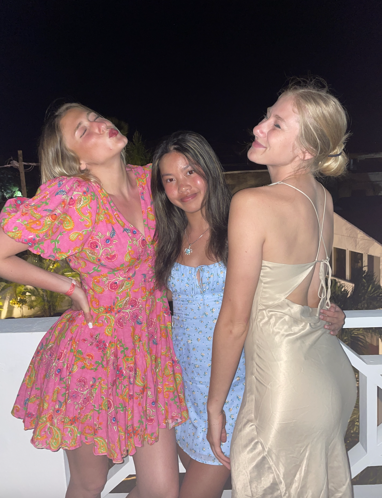

This is a photo of my family! I was born and adopted from Guangxi province in China. The kids are: Lindsay, Trevor, Caroline, and me

I spend the most time with my sisters since my brother, Trevor, lives in Australia. Here's a photo of me, Lindsay, and Caroline

My dogs! Rocky and Macy. Rocky is the yellow lab and Macy is the white labradoodle